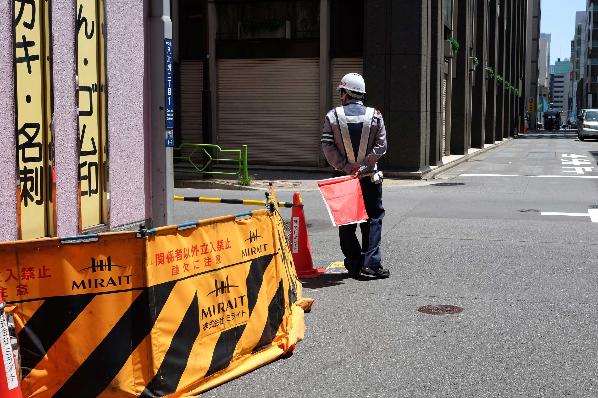
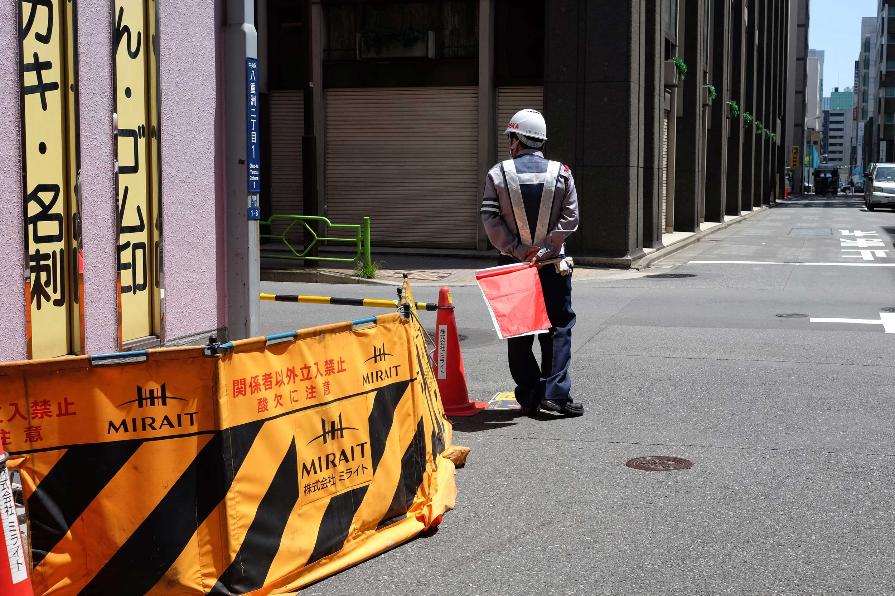

Japan ist ein 6852 Inseln umfassender ostasiatischer Staat im Pazifik, der indirekt im Norden und Nordwesten an Russland, im Westen an Nord- und Südkorea und im Südwesten an Taiwan und China grenzt und flächenmäßig der viertgrößte Inselstaat der Welt ist. De-facto-Hauptstadt und größte urbane Siedlung ist Tokio.
 



Tokio
(東京 Tōkyō)
Tokio ist eine Global City in der Kantō-Region im Osten der japanischen Hauptinsel Honshū. Mit 9.644.079 Einwohnern ist sie nicht nur die bevölkerungsreichste Metropole des Landes, sondern als Sitz der japanischen Regierung und des Tennō auch die Hauptstadt Japans. Sie umfasst die 23 Bezirke auf dem Gebiet der 1943 als Verwaltungseinheit abgeschafften Stadt Tokio und ist damit keine eigene Gebietskörperschaft mehr; stattdessen bilden die Bezirke zusammen mit den Städten und Gemeinden der westlich gelegenen Tama-Region und den südlichen Izu- und Ogasawara-Inseln die Präfektur Tokio. Diese bildet wiederum das Zentrum der Metropolregion Tokio- Yokohama, in der mehr als 38,5 Millionen Menschen leben (Stand 2019), was die Region zum größten Ballungsraum der Welt macht.